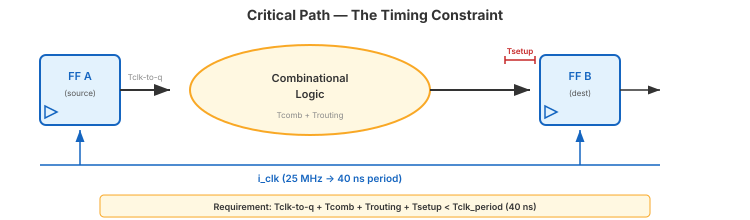
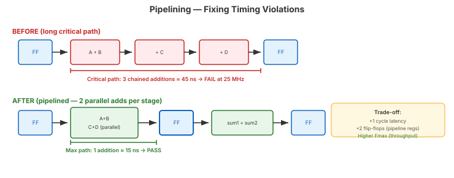

Video 1 of 4 · ~15 minutes
Dr. Mike Borowczak · Electrical & Computer Engineering · CECS · UCF
Every gate and wire has propagation delay. Signals take time to travel through combinational logic between flip-flops.

Tsetup Thold
◄──────► ◄──────►
│ │ │
data: ─────────────STABLE───────────────
│ │ │
clk: ────────────┐ │
└───────────────
↑
clock edge
Setup violation: data changes too close before the edge → wrong value captured
Hold violation: data changes too soon after the edge → wrong value captured
# Tell nextpnr about your clock:
nextpnr-ice40 --hx1k --package vq100 \
--pcf go_board.pcf --json top.json --asc top.asc \
--freq 25
# PASS — Fmax exceeds target
Info: Max frequency for clock 'i_clk': 48.23 MHz
# Target: 25 MHz → PASS (23 MHz of margin)
# FAIL — Fmax below target
Info: Max frequency for clock 'i_clk': 22.10 MHz
# Target: 25 MHz → FAIL! Design may work intermittently.① Pipeline: insert registers to break long combinational chains. Costs latency + FFs.
② Restructure logic: rethink the architecture. Sequential multiplier instead of combinational?
③ Relax the clock: lower the frequency if the application allows it.

① Critical path = longest FF-to-FF delay → limits maximum frequency.
② Slack = clock_period − total_delay. Positive = pass. Negative = intermittent failures.
③ --freq 25 on nextpnr enables timing analysis. Always include it.
④ Fixes: pipeline, restructure, or relax the clock — all have PPA trade-offs.
Up Next
Video 2 of 4 · ~20 minutes
Adders, multipliers, fixed-point — and what the synthesis tool actually builds.